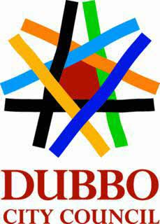
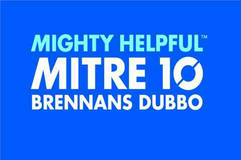
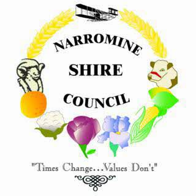
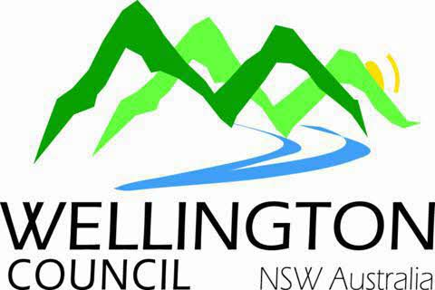
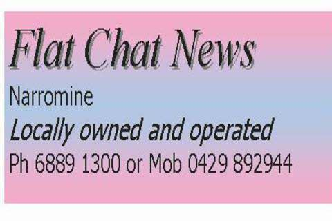
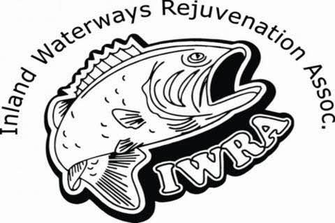

Macquarie River Trails
has been made possible by the support
of many organisations and businesses; too many to list them all here.
Details are available on www.rivertrails.com.au
This publication has been made possible with the financial support and
sponsorship of the following:
Gold Sponsors:
Dubbo City Council
Orana Mutual
Silver Sponsors:
Brennans Mitre Ten, Dubbo
Narromine Shire Council
Wellington Council
Mapping Services Australia
Bronze Sponsors:
Flat Chat News, Narromine
Inland Waterways Rejuvenation Association
Warren Chamber of Commerce
The not-for-profit organisation Riversmart Australia Ltd provides coordination and overall administration of the initiative. Visit www.riversmart.org.au for more information

Thanks to the Central West CMA for their ongoing support for the Macquarie Riversmart initiative.